Alineé a finanzas, tecnología y negocio en una sola definición de éxito para diseñar un facilitador bancario que conecta a los clientes de Homecenter y Constructor con créditos de distintos bancos, en un solo espacio pensado para cada perfil de cliente.
RolDiseñadora Senior UX/UI · Lideré el proceso de diseño
AlcanceInvestigación, estrategia de diseño, pruebas e iteración
PlataformaPantallas en tienda y web móvil
HerramientasFigma
EstadoEn producción desde dic. 2024 · homecenter.com.co
Dos perfiles de cliente y cinco aliados financieros, cada uno distinto.
La decisión
Un solo espacio con un flujo por perfil, alineado con cada banco.
Mi rol en ella
Lideré el proceso de diseño: investigación, estrategia, flujos y pruebas.
Resultado
Lanzamiento en diciembre de 2024. Los usuarios avanzaron con más seguridad.
flagCapítulo 01 · Reto y usuarios
El reto y los dos clientes
Un solo espacio para que cada cliente encuentre su crédito, con el banco de su preferencia.
El statement del reto
“Diseñar una herramienta de financiación para los clientes PRO y Hogar de Homecenter y Constructor que facilite la obtención de un crédito para quienes necesitan impulso en sus proyectos de remodelación o construcción.”
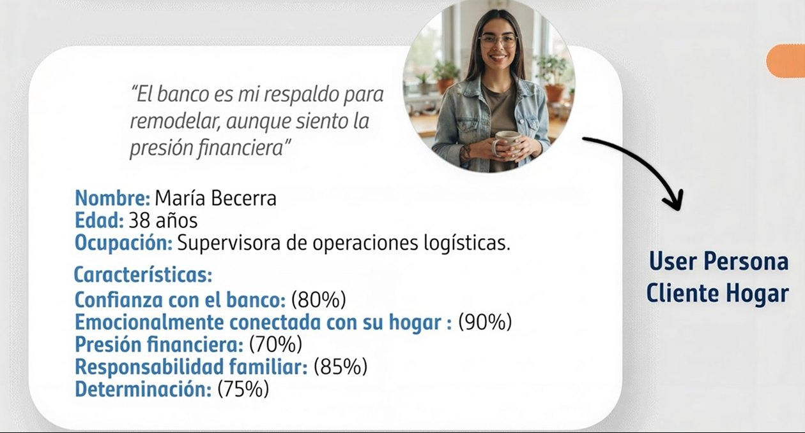
“El banco es mi respaldo para remodelar, aunque siento la presión financiera”
home
Cliente Hogar · Tus Proyectos
Personas que remodelan su casa y buscan un respaldo bancario claro. Línea de crédito a largo plazo para la construcción de sus proyectos de hogar.
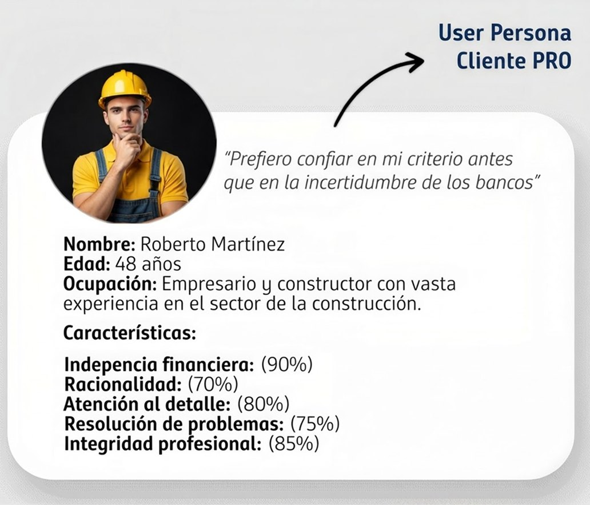
“Prefiero confiar en mi criterio antes que en la incertidumbre de los bancos”
construction
Cliente PRO · Capital de Trabajo
Constructores y contratistas del Círculo de Especialistas. Financiación exclusiva para socios especialistas que ayuda al crecimiento de su negocio.
Un proyecto con muchas dependencias
Del plan inicial al lanzamiento oficial
El plan inicial preveía salir entre febrero y abril de 2024. El lanzamiento oficial fue en diciembre de 2024: las integraciones técnicas, la validación legal, la definición del nombre y la marca, y la integración de los bancos necesitaban más tiempo.
Ago – Nov 2023Análisis y conceptualización
Alcance de la primera salida, referentes de Design System y flujos para pantallas y web.
Nov 2023 – Ene 2024Diseño, integraciones y desarrollo
Refinamiento del journey, integración con bancos, prototipo de alta calidad y mesa de trabajo con tecnología.
Feb – Abr 2024 · plan inicialSalida, visibilidad y capacitaciones
La fecha se movió mientras se resolvían las dependencias.
Diciembre 2024Lanzamiento oficial
Credicrea en producción, en pantallas de tienda y en homecenter.com.co.
Tecnología · integracionesLegal · validación de procesosMercadeo · nombre y marcaBancos aliados · integración
Mientras tanto, no esperé. Hice pruebas con usuarios, entregué insights al equipo e iteré el diseño en ciclos de Design Thinking, para que el producto llegara más maduro al lanzamiento.
Frameworks que guiaron las decisiones
Business Design
Alinear finanzas, tecnología y negocio
En Credicrea convivían varias visiones: finanzas centralizaba la relación con los bancos, tecnología evaluaba la viabilidad y negocio definía el alcance. Con la investigación de la primera etapa traduje esas visiones en objetivos de diseño e indicadores de éxito del producto, y diseñé journey maps para cada tipo de cliente y para cada banco aliado, alineando su experiencia interna con la de Credicrea.
Behavioral Design
Reducir la desconfianza hacia el crédito
Los usuarios llegaban con desconfianza hacia los créditos. Diseñamos mensajes de transparencia en cada paso del flujo; en las pruebas, los usuarios avanzaron con más seguridad.
HEART Framework
Probar si los usuarios avanzan, y con qué seguridad
En las pruebas con usuarios observé si lograban avanzar por el flujo (Task success) y con cuánta seguridad (Happiness). La medición en producción, definida por el negocio, sigue un embudo de conversión.
Medición
Qué se mide y qué aporté
El negocio definió cómo medir el éxito del producto en producción. Mi parte fue comprobar en pruebas con usuarios que las decisiones de diseño funcionaban.
Negocio · medición en producción
Embudo de conversión
Clientes que escanean el QR de financiación
Clientes con oferta de crédito
Clientes que seleccionan una oferta
Clientes con crédito aprobado
Utilización del cupo
Tasa de usoEfectividadIdentificación del clienteInteracciones y puntos de acceso
Percepción · pruebas con usuarios
+ confianza
Confianza al avanzar
Con mensajes de transparencia en cada paso, los usuarios avanzaron con más seguridad en las pruebas.
Los resultados son trabajo de equipo: el diseño contribuyó, pero rara vez es la única causa de un resultado.
searchCapítulo 02 · Investigación y decisiones
Qué aprendimos y qué decidimos
El principal objetivo fue sumergirnos en el sector bancario para conocer su comportamiento digital y la manera como nuestro target interactúa con él, además de conocer más a quienes serían nuestros consumidores y enfocar en ellos la propuesta.
Hallazgos
groups
Nuevas pautas de consumo: hay un claro interés por entender al consumidor y empatizar con él.
smartphone
Movilidad: ha sido fundamental para que el sector continúe relevante en el mercado.
support_agent
Atención al cliente: es uno de los puntos más polémicos, porque gran parte del negocio se basa en ella.
verified_user
Confianza: Banco Santander y BBVA son percibidos como los bancos más serios, consolidados y seguros.
Lo que esto significó para el diseño
check_circleLenguaje claro para el usuario.
check_circleEstética general que aporte sensación de claridad, limpieza y utilización de colores suaves.
check_circleElementos que faciliten la navegación del usuario dentro del producto.
devicesCapítulo 03 · Solución
La solución: dos flujos para dos clientes
El mismo recorrido adopta la identidad de cada perfil: azul para Hogar y amarillo para el Círculo de Especialistas.
Diseñé para dos canales: las pantallas en tienda y la web móvil, con un código QR para continuar la solicitud en el celular.
El recorrido
De la notificación a la aprobación
El cliente recibe un mensaje push, solicita el crédito y completa un formulario. Se evalúa al cliente y, si está preaprobado, se ejecuta el motor de riesgo; después ve los bancos y sus posibles cupos, continúa el proceso de solicitud con el banco y recibe el mensaje de aprobación.
Flujo Hogar · Tus Proyectos
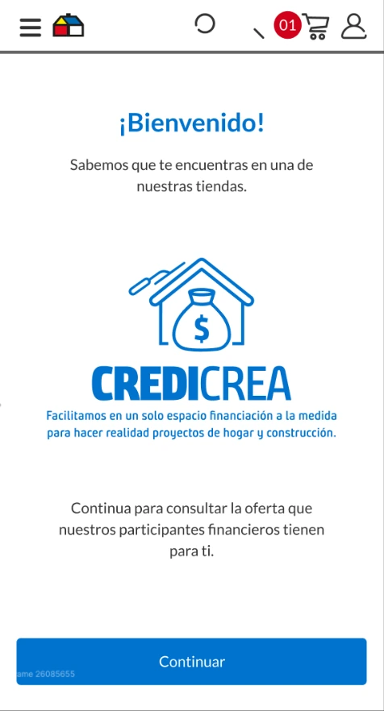
Bienvenida
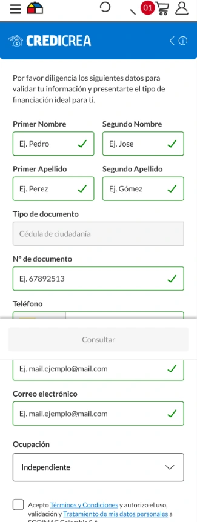
Formulario lleno
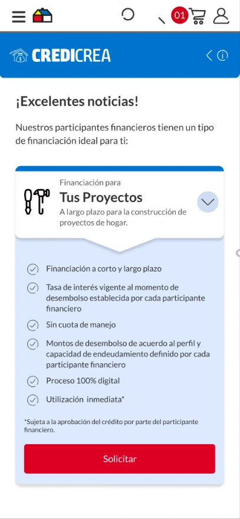
Tus Proyectos
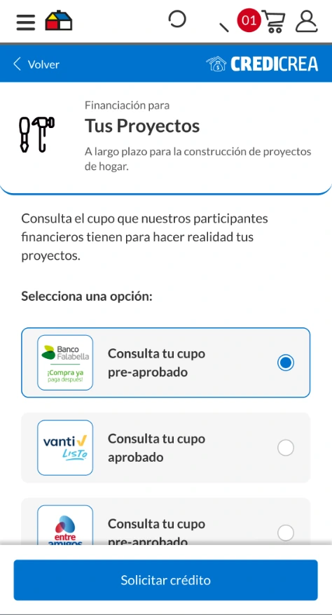
Selección de banco
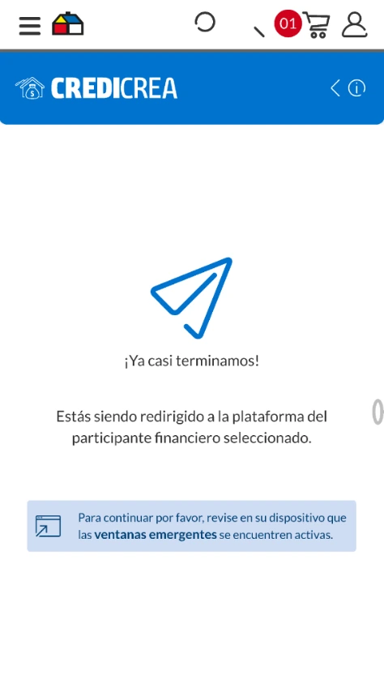
Redirección
Flujo PRO · Capital de Trabajo · Círculo de Especialistas
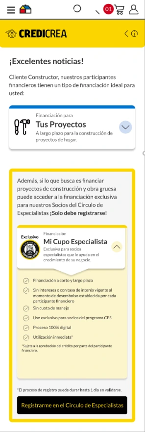
Capital de Trabajo
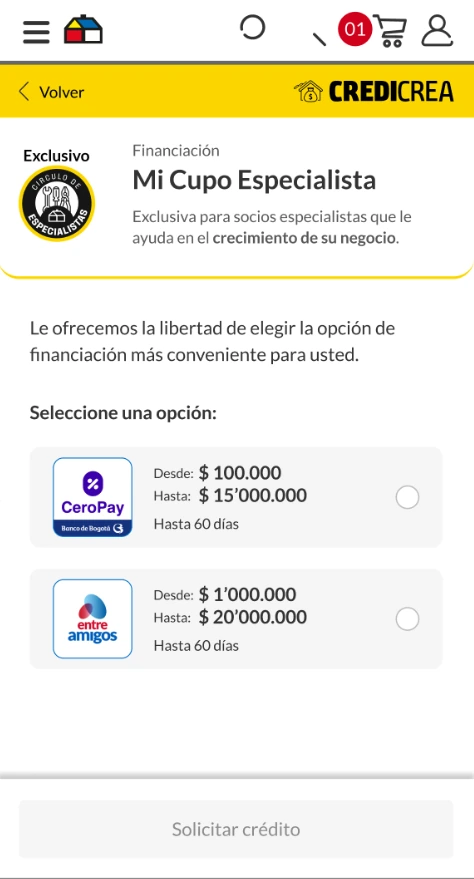
Selección de banco
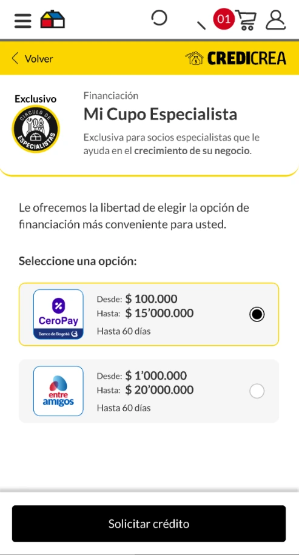
Banco elegido
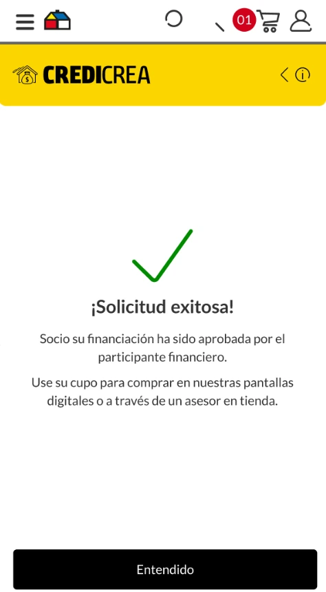
Solicitud exitosa
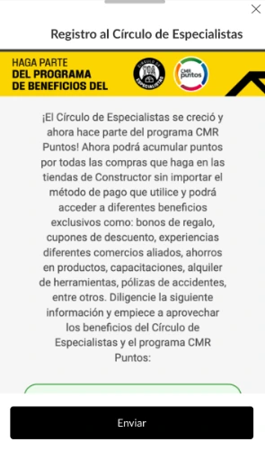
Registro Círculo de Especialistas
Flujos de usuario por etapa y por dispositivo
Diseñé los flujos de cada etapa del recorrido y de cada dispositivo: pantallas en tienda y web móvil. Toca un diagrama para verlo en grande.
1 · Flujo de entrada: de la pantalla de tienda al celularDesde el Home o la lista de productos de las pantallas en tienda, el cliente solicita el crédito y continúa en la web móvil escaneando un QR o recibiendo un link por WhatsApp.
2 · Flujo en web móvil: un formulario, tres perfilesTras el formulario de validación, la segmentación lleva a cada perfil (Círculo de Especialistas, PRO y Hogar) a su recorrido: tipo de crédito, selección de banco y consulta de preaprobado o solicitud.
3 · Flujo de checkout en pantallas: según el estado del créditoEn el pago, si el cliente ya pasó por el kiosko y tiene crédito aprobado, ve sus opciones aprobadas y sigue al desembolso en el banco; si no, consulta su preaprobado.
Lanzamiento oficial en diciembre de 2024. Hoy acompaña a los clientes Hogar paso a paso: desde la solicitud del crédito hasta el pago de su compra.
Paso a paso para acceder a la financiación
BienvenidosHaz clic en continuar para empezar con la solicitud.FormularioDiligenciar los datos, aceptar términos y condiciones y el tratamiento de datos personales.Elegir el tipo de créditoMi Cupo Especialista o Tus Proyectos.BeneficiosEl tipo de financiación y los beneficios que los aliados tienen para cada cliente.Selección de entidadSeleccionar la entidad financiera que se ajuste a la necesidad.Solicitud exitosaLa entidad valida la identidad de forma biométrica y confirma el cupo aprobado, listo para usar de inmediato.Solicitud digitalEscanear el código QR desde el celular y seguir los pasos del proceso.
Con todos los objetivos establecidos y los wireframes en baja fidelidad, desarrollé la Style Guide: una paleta azul para el cliente Hogar, una paleta amarilla y negra para el cliente Constructor y una escala de grises compartida.
Componentes a la misma escala que las pantallas del prototipo.
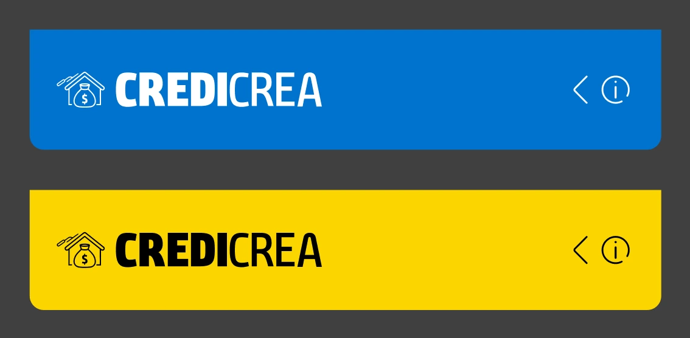
Cabeceras
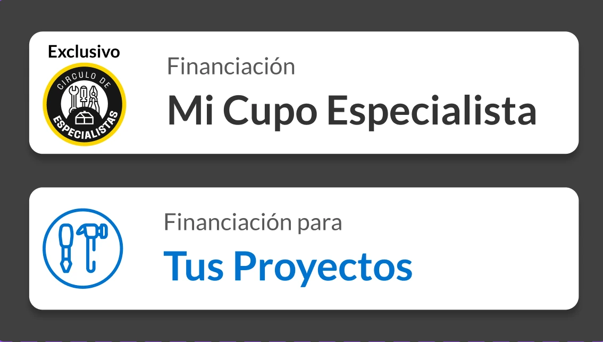
Opciones de crédito
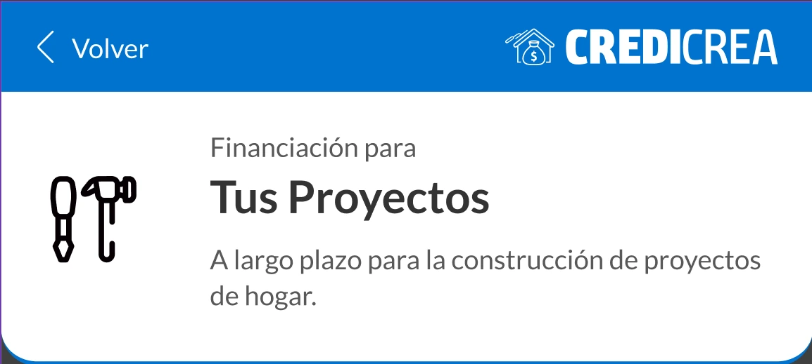
Detalle · Hogar
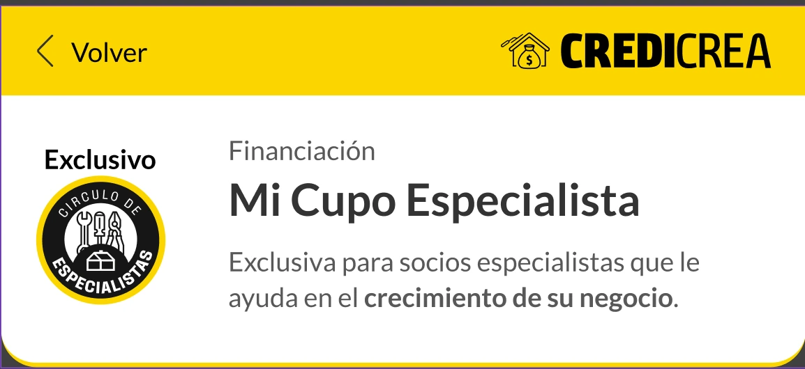
Detalle · PRO
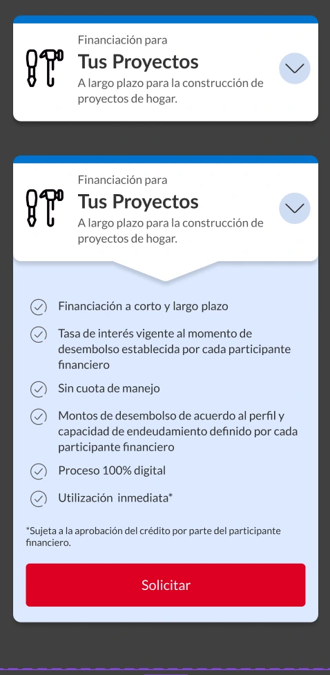
Tarjeta expandible · Hogar
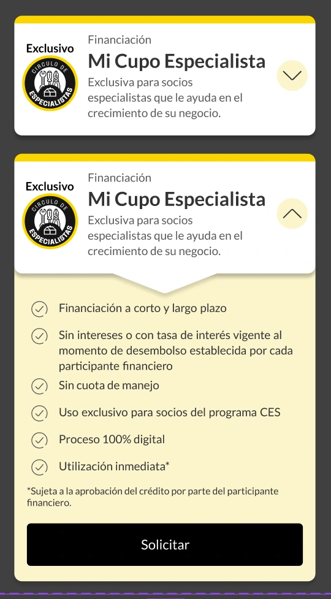
Tarjeta expandible · PRO
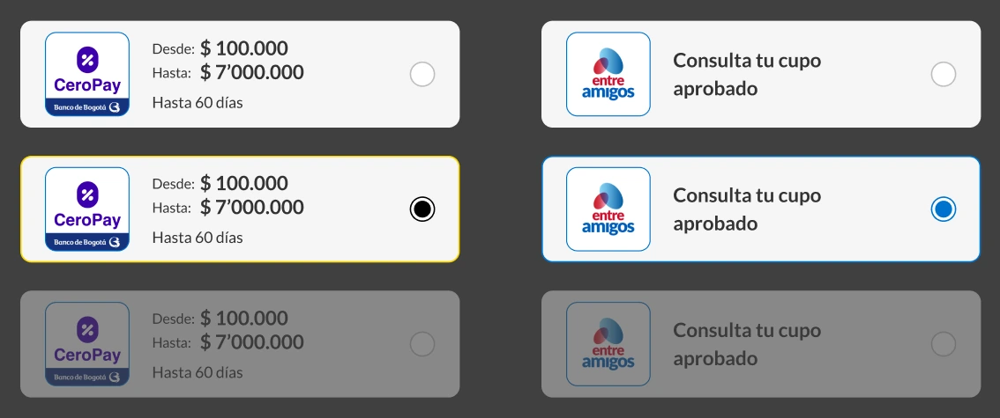
Selector de bancos
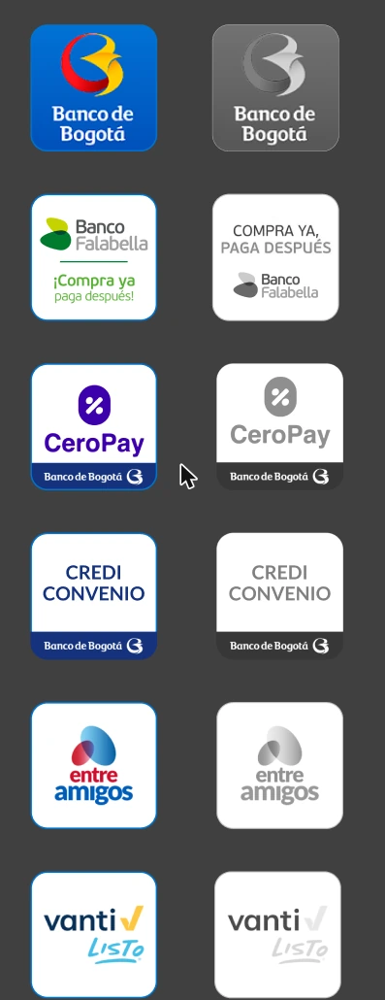
Logos de participantes
Style Guide
Colores, tipografía, logotipo, íconos y retícula que sostienen los dos flujos.
Azules institucionales que transmiten calma y confianza para el crédito del hogar.
construction
Primarios Constructor
Amarillos y negro de alto contraste para el perfil PRO y el Círculo de Especialistas.
text_fields
Tipografía Lato
Lato Regular ($font-primary-regular) y Lato Bold ($font-primary-bold) definidos como tokens.
Logotipo
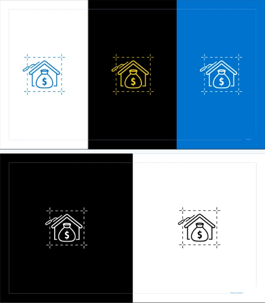
Isotipo
Una casa y una bolsa de dinero resumen la propuesta: financiar proyectos de hogar. Se usa sobre blanco, negro y azul.
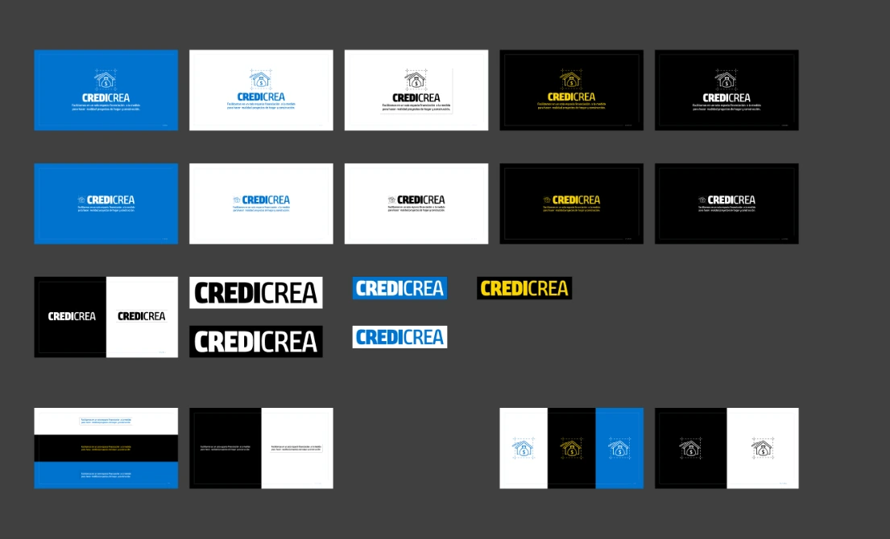
Versiones del logotipo
Versión principal con descriptor y versión horizontal, en la paleta Hogar (azul) y en la paleta Constructor (amarillo y negro).
Íconos
Íconos originales del sitio de Homecenter, extraídos como SVG; los que no existen en su librería se redibujaron en el mismo estilo.
Layout
Todas las pantallas se construyen sobre una retícula de 4 columnas con márgenes laterales de 16 px, para que cada componente se alinee igual en cualquier flujo.